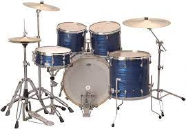

The piano is an acoustic, stringed musical instrument invented in Italy by Bartolomeo Cristofori around the year 1700 (the exact year is uncertain), in which the strings are struck by wooden hammers that are coated with a softer material (modern hammers are covered with dense wool felt; some early pianos used leather). It is played using a keyboard, which is a row of keys (small levers) that the performer presses down or strikes with the fingers and thumbs of both hands to cause the hammers to strike the strings. Beethoven is probably the most notable piano composer who ever lived.

The guitar is a fretted musical instrument that usually has six strings.It is typically played with both hands by strumming or plucking the strings with either a guitar pick or the fingers/fingernails of one hand, while simultaneously fretting (pressing the strings against the frets) with the fingers of the other hand. The sound of the vibrating strings is projected either acoustically, by means of the hollow chamber of the guitar (for an acoustic guitar), or through an electrical amplifier and a speaker.
A tabla is a pair of twin hand drums from the Indian subcontinent. Since the 18th century, tabla has been the principal percussion instrument in Hindustani classical music, where it may be played solo, as accompaniment with other instrument and vocals, and as a part of larger ensembles. Tabla is also frequently played in popular and folk music performances in India, Bangladesh, Pakistan, Nepal, Afghanistan and Sri Lanka.Tabla is also featured in dance performances such as Kathak.

The drum is a member of the percussion group of musical instruments. Drums consist of at least one membrane, that is stretched over a shell and struck, either directly with the player's hands, or with a percussion mallet, to produce sound.. A wide variety of sticks are used, including wooden sticks and sticks with soft beaters of felt on the end. In jazz, some drummers use brushes for a smoother, quieter sound.Drums are the world's oldest and most ubiquitous musical instruments, and the basic design has remained virtually unchanged for thousands of years.
The violin, sometimes known as a fiddle, is a wooden chordophone (string instrument) in the violin family.The violin was first known in 16th-century Italy. Most violins have a hollow wooden body.The violin typically has four strings, usually tuned in perfect fifths with notes G3, D4, A4, E5, and is most commonly played by drawing a bow across its strings.Violins are important instruments in a wide variety of musical genres. They are most prominent in the Western classical tradition, both in ensembles (from chamber music to orchestras) and as solo instruments.